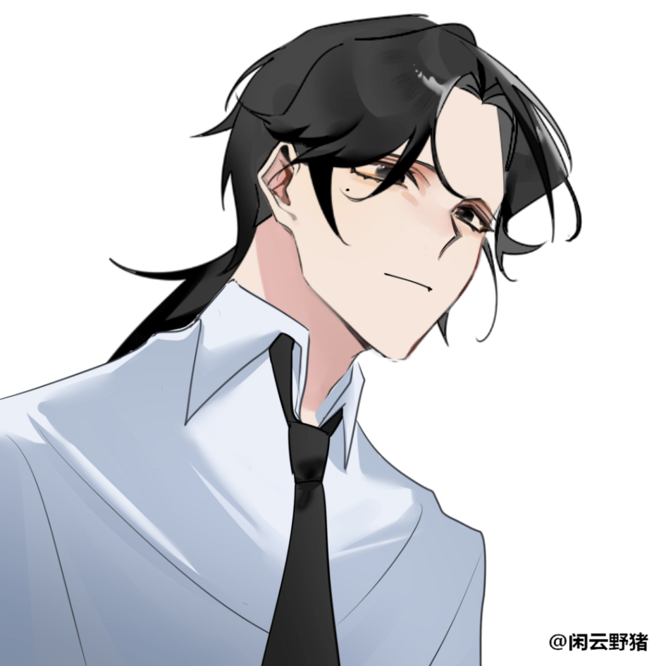

캐치 프레이즈
다 울었니? 이제 출근을 하자.
한마디
“ 다음 주에 프로젝트 발표하는데···. ”
외관
출처 : https://www.neka.cc/composer/12715
창백하다. 객석 내부를 비추는 조명 아래, 그 일부를 받아낸 얼굴빛은 희게 질려 있었다. 작은 체구가 아니었으나 굽은 어깨와 비스듬히 숙인 고개로 인해 원래의 체격보다 작아 보였다. 그의 낯은 응어리진 피로가 그득했다. 깊은 눈매 아래엔 다크써클이 움푹 패여 있었고, 차장 너머를 향한 시선은 고뇌로 얼룩져 있다. 그는 넋을 놓고 있다가도 이따금씩 휴대폰의 알림을 확인했는데, 그때마다 눈살을 찌푸리면 오른쪽 눈가의 점이 두드러져 보였다. 그러나 눈살을 찌푸린다고 해서 짜증을 표출하는 건 아니었다. 직장인의 애환이 담긴··· 한 같은 감정이 잠깐 떠오르다 사그라 들었다. 그런 건 여의도 한복판에서 볼 수 있는 흔하디 흔한 인상이었다. 중저가 기성복 브랜드의 정장 바지, 잘 다려 입은 셔츠, 특별할 것 없이 검은 넥타이를 조여 당긴 것까지. 누가 봐도 야근수당을 받고 막 퇴근한 모습이었다. 그는 공공장소 에티켓을 고려해서 최대한 소리를 죽이려고 했지만 구둣발 소리를 다 숨길 순 없었다. 그래도 가죽 로퍼는 외근이 잦은 그의 발을 조금이나마 편하게 해주었다.
다소 헝클어진 머리칼을 한 데로 묶은 채, 지하철이 덜컹거릴 때마다 흘러내리는 앞머리를 쓸어 올렸다. 어느새 한쪽 팔엔 정장 자켓과 서류 가방이 들려 있다. 전형적인 샐러리맨의 모습, 그 이상 이하도 아녔다.
이름
김지석 金持晳
나이
30세
키/체중
180cm / 70kg
성격
지석 씨, 조금 무뚝뚝하죠?
종이컵 안에 든 카누 커피를 휘휘 저으며 옆 부서 직원이 D에게 물었다. 탕비실은 직원 간 커뮤니케이션이 활발히 이뤄지는 장소라 그런가, 물음을 건네받은 D는 난처한 듯 눈썹을 구부렸다가 고개를 내저었다.
그래도 신입들 제일 잘 챙겨요. 항상 지석 씨가 사수 노릇해주잖아요. 저도 대리님 덕분에 적응한 거기도 하고···.
으응, 인내심도 무척 좋아요.
군말 없이 상사 분들을 따르기도 하고, 외근도 자주 나가잖아요. 이번에도 인센티브 받는다던데? 나긋한 음성과 노릇한 커피 내음이 탕비실을 가득 채운다. D도 막 내려진 커피에 얼음 조각을 빠뜨리며, 신입 때 마주했던 지석의 모습을 회상한다. 말수가 적어 업무 외의 사담은 하지 않으나, 신입들이 물어보는 질문엔 귀찮아 하는 기색 없이 세심히 알려주었다. 같은 주제의 비슷한 갈래의 질문도, 다른 상사들과 다르게 직접 시범을 보여 주기도 했다. 처음엔 지석을 두려워 했던 신입들은 나중 가선 지석의 파티션으로만 갔더랬다. D 또한 과장님께 지시받은 업무 중 하나를 실수했을 때, 지석은 그 부분을 고지해주지 않은 제 탓이라고 쉴드쳐 주었다. 덕분에 과장은 가볍게 훈계만 하고 끝냈다. 여러모로 우직한 사람이었다.
좋은 분이세요. 정말로.
쉽게 흘려 넘기지 않고 타인의 말을 경청했다. 간섭보단 다정으로 상대를 위했으며, 그것을 입밖으로 내어 과시하지 않았다. 오히려 옆에서 그 모습을 보던 동료가 조급해지기 일수였다. 그래도 지석은 자신의 페이스대로 회사생활을 수행해 나갔다. 공과 사가 분명하고 타인의 영역을 존중해 주는 사람. 예민해 보이는 인상과 다르게 마음씨가 넓은 분이라고, D는 제 상사를 평했다.
기타
4월 21일
Rh+A형
SU컴퍼니의 경영지원 1팀 대리. 첫 직장이고 근무 환경도 나쁘지 않다는데, 외근이 잦은 걸 보니 마냥 그런 거 같지도 않다. 원체 무던한 사람이라 티가 나지 않는 걸지도.
보부상 소리를 들을 만큼 챙겨 다니는 게 많다. 평소엔 들고 다니지 않아도 차량 안엔 반창고, 상비약, 담요, 텀블러, 보조배터리, 하다 못해 슬리퍼까지. 안 그래 보여도 이것저것 챙겨 다닌다.
직장생활에 적응돼서 그런지 기본적으로 말투가 정중하다. 가끔은 가까운 사이에서도 존댓말이 튀어 나올 정도니···.
향수를 사용한다. 인공적인 향이 아니라 시트러스 계열의 향기. 본인 취향은 아닌 거 같은데도 생일 선물로 받았다고 꿋꿋이 사용 중이다.
회사 거래처와의 미팅을 마치고 퇴근하던 길이었다. 지하철 탑승 이후로 상사에게 미팅 결과를 간략히 보고하며, 좌석이 위치한 안쪽 자리에 서 있었다.
소지품
서류 가방(갤럭시 탭, 명함카드)
관계
-